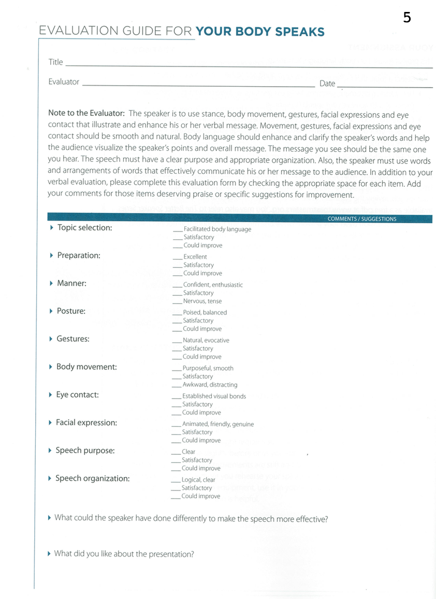

<!-- Main -->
	<div id="main" class="wrapper style1">
		<div class="container">
			<section>
				<div class="10u -1u">
					<header class="major">
						<!-- <h2>Blog</h2> -->
						<!-- <span class="byline">Integer sit amet pede vel arcu aliquet pretium</span> -->
					</header>
					<h2>What is this speech about ?</h2>
					<ul>
						<li>Body language is an important part of speaking because it enhances your message and gives you more credibility.</li>
						 <li>It also helps release any nervousness you may feel. </li>
						<li> Stance, movement, gestures, facial expressions and eye contact help communicate your message and achieve your speech’s purpose. </li>
						<li>Body language should be smooth, natural and convey the same message that your listeners hear. </li>

</ul><br>
<h2>Objectives</h2>
<ul>

<li>Use stance, movement, gestures, facial expressions and eye contact to express your message and achieve your speech’s purpose.</li>
	 <li>Make your body language smooth and natural.</li>
	 <li>Time: Five to seven minutes.</li>
</ul><br>
<h2>Evaluation</h2>
Download: <a href="Evaluation5.pdf"></a>
	<br>

	<h2>Videos</h2>
	<p align="center">
		<iframe height="500"
		src="https://www.youtube.com/embed/sLXWYnrVrqI">
		</iframe>
	</p>

	<h2>More Resources</h2>
<li><a href="Your_body_speaks.pdf">Resource from Toastmasters</a></li>
		<li><a href="https://www.toastmasters.org/~/media/E202D7AA84E24A758D1BAAE8A77FD496.ashx">How to Become Skilled at Nonverbal Communication</a></li>
		<li><a href="http://sixminutes.dlugan.com/toastmasters-speech-5-your-body-speaks/">Unofficial guide to Speech 5</a></li>


				</div>
			</section>
		</div>
	</div>
